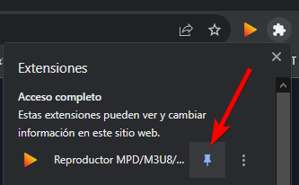
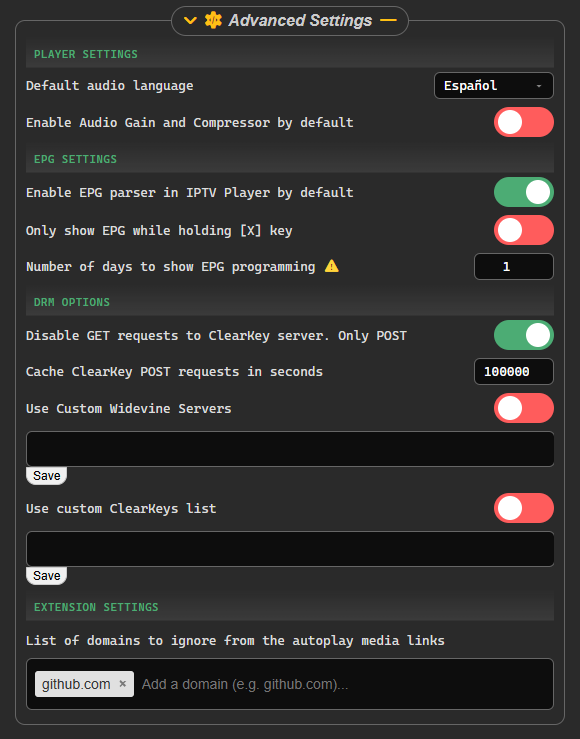

VideoPlayer MPD/M3U8/IPTV/EPG
VideoPlayer MPD/M3U8/IPTV/EPG- WarningLooks like you are using a modified version of this extension.
It has come to my attention that there are modifications of this extension being distributed with malware.
https://sharkiller.dev/videoplayer/
If you installed the extension from another source that is not theOfficial Page
uninstall it immediately.
📌 Remember to pin the extension for easy access to settings
- 🟢 Use the puzzle menu on top right of Chrome to pin the extension

- 🟢 Once done, you can access the extension settings with one click on the extension icon
